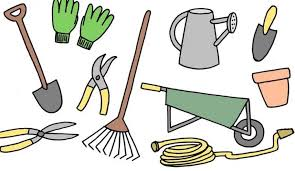

Gardening

Seeds

Waste Management includes the processes and actions required to manage waste from its inception to its final disposal. This includes the collection, transport, treatment and disposal of waste, together with monitoring and regulation of the waste management process and waste-related laws, technologies, economic mechanisms.
Plough IT, Vijayawada objective is to be engaged in the research and development of better and scientific solid waste management practices.The primary focus of the waste management has been shifting over the years from quantification and characterization of solid waste in early years to reuse, recycle, and energy recovery from solid waste in recent years. This division is focusing for contributing significantly to Municipal Solid Waste Management research always keeping in view the contemporary focus of the research. Accordingly this division has aligned its research towards the scientific and technical needs for the Swachha Bharat Abhiyan.
The division has expertise and research capabilities in following domains of the Waste management
Farming was started way back in Pre-dynastic period and has improvised in many ways to reach present day feeding of ever increasing population. One such improvisation is of equipment used for various agricultural activities. The present advance technology for high production of quality yield was once started with a wooden plough. Today every step in agriculture cycle i.e., from land preparation to harvesting at field level and post harvests processing starts and ends with machinery. So, we at Plough IT aims to take every machinery and technology involved in agriculture to every single farm in order to bring down the drudgery of the farmer and to take up every operation on time. We are committed to join farmers and become prime mover of every farm to achieve safe and timely farm operations for quality production.
Custom Hiring Centers: We have established custom hiring center at Mellamarthi Lanka, Mopidevi mandal, Krishna district to make available various machinery and implements to farmers on nominal charges in order to take mechanization to every farm land.
Processing Plants: In most of the regions, farms are still using conventional ways of cleaning their produce which involves lot of time, drudgery and losses. We intend to provide cleaner and graders for cleaning and grading to overcome these issues and fetch higher rate for produce.
Consultancy Services: Apart from regular agricultural practices it is required to introduce latest technology on protected cultivation particularly in vegetable and floriculture, Irrigation systems, Land &Water Management. Plough IT suggest you the needful strategies to introduce technology for sustainable and protected cultivation.
Extension Services extend information to users - Farmers, Growers, and Homeowners:
Extension is a service which assists farm people, through educational procedures, in improving farming methods and techniques, increasing production efficiency and income, bettering their standard of living and lifting social standards.
As facilitators and communicators, our team Plough IT will provide services to farmers in their decision-making and ensuring that appropriate knowledge is implemented to obtain the best results with regard to sustainable production and general rural development.
Plough IT aimed at implementing projects for change in the agricultural sector collaborating with the farmers.
Plough IT services mainly concentrated on to strengthen the agricultural system by empowering farmers in livelihood and income.
We, the people of Plough IT team will help in distribution and utilization of agricultural inputs, increase farm productivity, farm revenue, increasing market efficiency, and reduce poverty and minimize food insecurity.
41-1/6-28, Revenue Ward-22,Block No-22,
Muncipal Corporation, Krishnalanka
Vijayawada, Krishna, Andhra Pradesh
520013
Phone : 8688093369
support@ploughit.com


support@ploughit.com